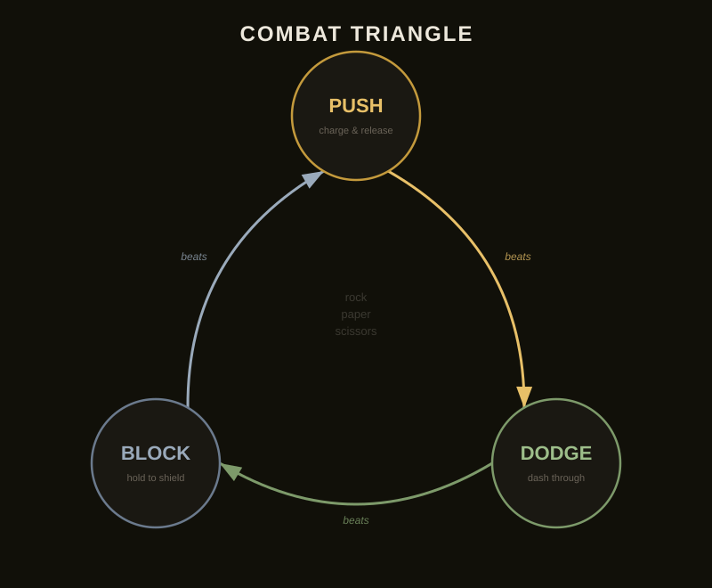
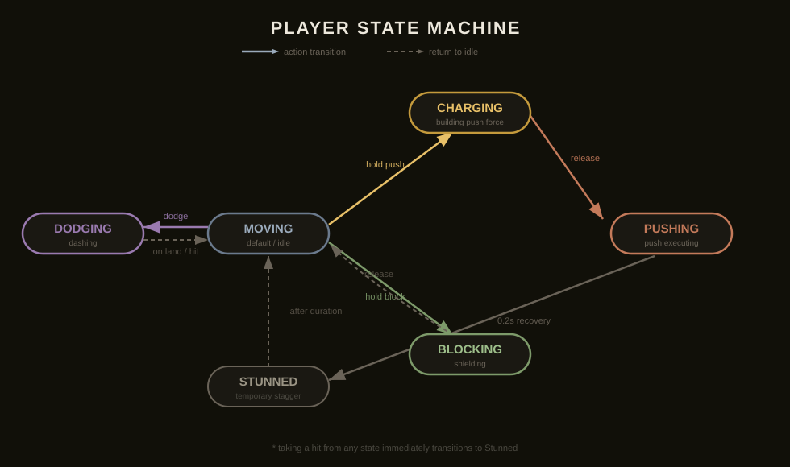
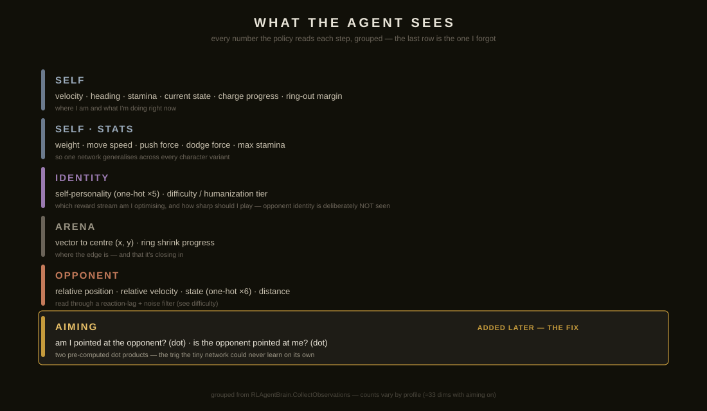
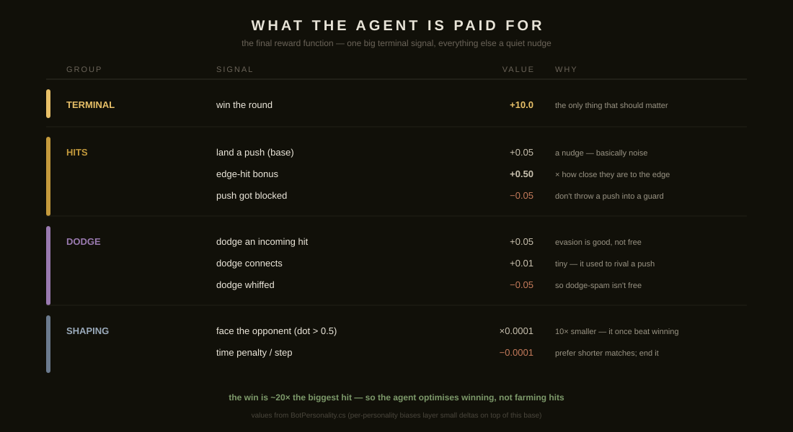
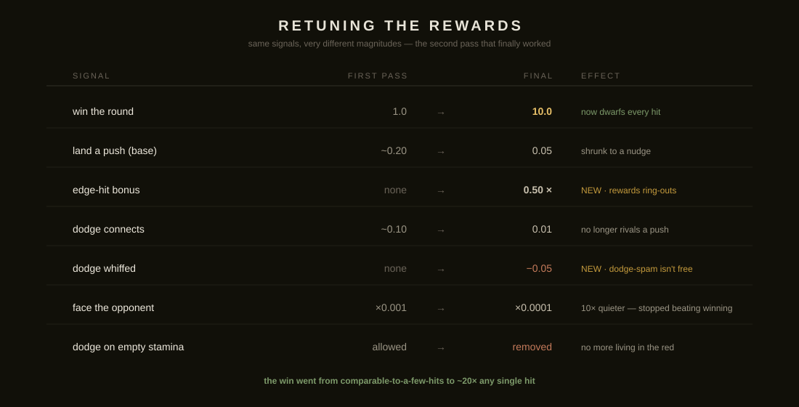
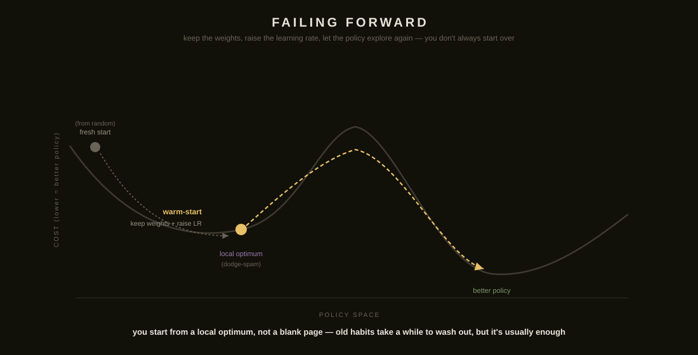
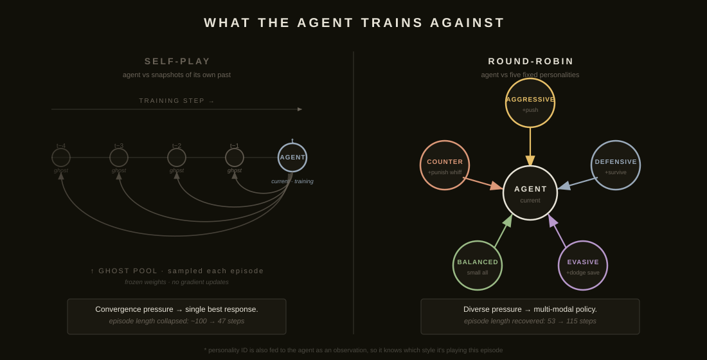

Pushman · an RL devlog
I wanted smart opponents for my little ring-out fighting game. I got them — and found an impressive number of wrong ways to train a reinforcement-learning agent on the way there. Here are the ones worth learning from.
scroll ↓
01 · the game in 60 seconds
Pushman is a two-player ring-out fight. Push beats dodge, dodge beats block, block beats push — rock-paper-scissors with a stamina meter on top. Six states under the hood, and you commit when you act: no moving while you charge a push, no pushing while you block. The whole game is reading which one your opponent is about to commit to. That's what I wanted the bots to learn.


02 · the first pass
The agent sees where it is, where the opponent is, both stamina meters, who's in which state. It can move, turn, and pick one of three actions. For rewards I did the obvious thing — a little for landing hits, a little for surviving, a little for facing the opponent, and a real prize for winning. PPO, nothing exotic. It trained. It played badly. Which, for a first pass, is exactly what you'd expect — the interesting part is how it was bad.


03 · mistake — the reward economy
The rewards were sane and yet the bots only ever dodged. Two-thirds of my rock-paper-scissors went extinct, and the training curve looked fine the entire time. Here's why. (scroll the panel)
01
A dodge and a push paid about the same reward. On paper, a fair fight.
02
A dodge is one input. A push is a four-step commitment — charge, hold, release, still be standing there when it lands. Same reward, a fraction of the effort.
03
Why earn the same payout the hard way? The push withered out of the policy — and block only counters a push, so block died with it.
04
Rock-paper-scissors collapsed to just rock. And the reward curve never flinched — it looked healthy the whole time.
05
It was making the win dwarf any run of hits, and paying the most for hits that shove someone toward the edge — where ring-outs actually happen.

04 · mistake — the missing observation
They dodged fine, but their pushes and blocks pointed at nothing. The agent knew where the opponent was, and it knew its own heading — but I never gave it the one number that matters for aiming: am I actually pointed at them? A push only lands in a narrow cone in front of you, and I was asking a handful of neurons to derive that alignment from raw angles — to learn trigonometry from scratch. It couldn't. The fix was almost insulting: compute the dot product myself and hand it over.
The irony: I'd been paying the bot to face the enemy long before I gave it any way to know whether it was.
05 · the catch
The moment you add an input, the network's first layer changes shape — and every weight you'd trained is now the wrong size. You can't carry it forward. So adding that one aiming number meant throwing the model out and starting fresh, with rebalanced rewards and retuned stamina all at once. Fine when you plan for it. Miserable when you find out by surprise.
06 · what worked — failing forward
As long as you don't change what the network sees, and keep the rewards on the same scale, you can keep refining: re-weight the rewards, warm-start from the weights you already have, bump the learning rate so the policy explores again, and let it go. You're starting from a local optimum, not a blank page. The boring discipline that buys you this — pick a representative set of observations and rewards early, and most of your iteration becomes tuning instead of rebuilding.

07 · what worked — variety
I wanted several bots worth fighting, not one optimal one. The textbook move is self-play — fight past copies of yourself — but it collapses: the agent finds one opening that beats the ghost pool and the fights stop being fights. So instead I trained one network against five hand-defined personalities, each just a small reward bias with its identity fed in as a one-hot input. Facing five pressures every episode, no single strategy beats all of them, so the network stays flexible. Slower at first, but robust — and because personality is just an input, I can pick which bot you face, and how hard it reacts, after training.

↑ personality fed as one-hot network input — swap the active row, swap the bot. No retraining.
08 · proof
The bots learned to bait a block, wait out the opponent's stamina, and punish the drop. That's the policy reading its opponent — the exact thing I set out to build.
09 · the last mistake
I won — a varied, sharp set of bots that read you and punished you, at whatever difficulty I picked. Then I sat down to actually play my own game, as a human, and it wasn't fun. Not because of the bots — because of the stamina economy the whole thing was built on. The bots were a perfect solution to a game I hadn't finished designing.
Which ties the rest together: I optimized hard for a reward I never checked was the right one. I misspecified my own objective. It took the bots three million steps to stop ringing themselves out. Hopefully it doesn't take me that many to remember to play the thing before I train against it.
if you're starting your own
The cheapest, highest-leverage thing isn't a reward function. It's one honest opponent worth losing to, rough numbers for stamina and force and distance, and an hour of actually playing it before you train anything. The network will optimize whatever you hand it, perfectly — including your mistakes.